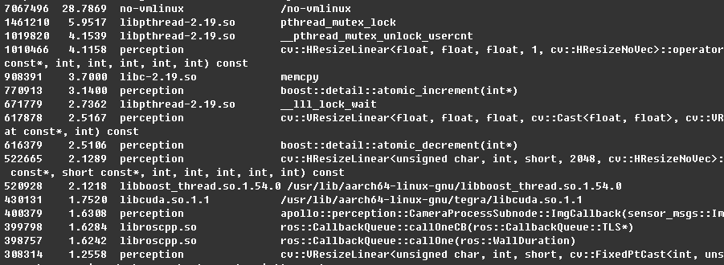

ff
oprofile是运行在linux系统上对应用程序进行性能测试的工具。linux系统中已经自带了oprofile的相关工具，但是oprofile module在arm平台没有支持，所以我们需要手动安装oprofile。
oprofile对多线程支持良好，可以对函数调用次数及源码进行分析，所以非常适合在TX2上使用。
下载
下载最新版本的oprofile
$ wget http://prdownloads.sourceforge.net/oprofile/oprofile-1.4.0.tar.gz
$ tar zxvf oprofile-1.4.0.tar.gz
$ cd oprofile-1.4.0
安装oprofile
$ sudo apt-get install libpopt-dev libiberty-dev binutils-dev
$ ./configure
$ make -j4
$ sudo make install
测试
安装好后，执行operf命令查看能否正常获取cpu信息。如果出现如下报错：
unable to open /sys/devices/system/cpu/cpu0/online
这是因为默认TX2只开启了4个CPU，有2个CPU处于未开启状态。 执行如下命令开启额外的两个CPU：
$ sudo nvpmodel -m 0
使用方法
oprofile提供了多种命令，通常情况下我们使用比较多的是operf，opreport和opannotate。
以测试perception模块为例。
1.修改
script/apollo_bash.sh脚本，文件第239行的nohup后面增加operf指令，如图：

2.使用脚本如
./script/perception.sh启动perception模块
这样operf就会进行perception进程的运行数据统计。使用任意方法停止perception进程即可停止数据收集。
测试数据查看
停止perception进程后，在当前文件夹下将生成文件夹oprofile_data。
使用指令opreport查看模块的总体占比：
$ opreport
结果示例为：

使用opreport查看函数占比：
$ opreport -l bazel-bin/modules/perception/perception
因为输出信息很多，所以需要将上述结果保存为文本文件
$ opreport -l bazel-bin/modules/perception/perception > perception_op_funcs.md
结果示例为：

使用opannotate查看详细的源码数据统计：
$ opannotate -s bazel-bin/modules/perception/perception > perception_op_details.md
注意事项：同时只能运行一个operf进程，所以对perception进行数据统计时无法再用operf启动其他模块。
oprofile官方网站： http://oprofile.sourceforge.net/news/
oprofile用户手册： http://oprofile.sourceforge.net/doc/index.html